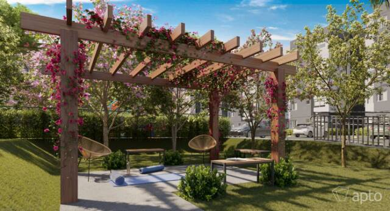

2 quartos com entrega em dezembro de 2026
O Bosque Jacarepaguá é um condomínio da Tenda em obras na Rua Jordão, em Jacarepaguá.
São 6 torres de apartamentos de 2 quartos, com entrega prevista para dezembro de 2026, financiamento CAIXA e FGTS na entrada.
Informações de mercado de portais de lançamentos, sujeitas a alteração. Plantas, tabela vigente e disponibilidade eu envio pelo WhatsApp.